Here are 127 photos of Multicians over the years, mostly by me. (There is room for your photos too: send mail.) Photos are grouped by where people worked, and within those groups by year the picture was taken. Click any thumbnail to open a larger view and to see slideshow controls.
CISL Multicians (54)
Here are some pictures of Multicians who worked at the GE/Honeywell Cambridge Information Systems Laboratory (CISL).

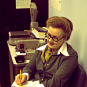
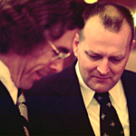
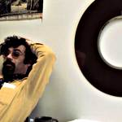
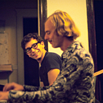
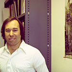
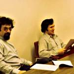

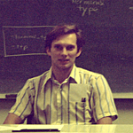
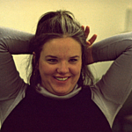
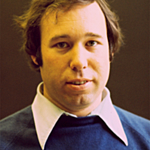
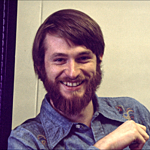
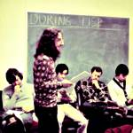
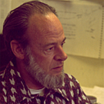
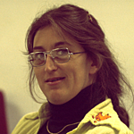
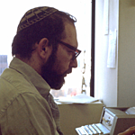
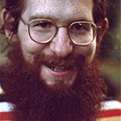
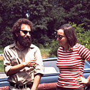
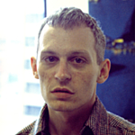
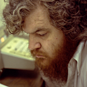
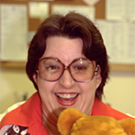
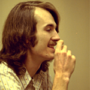

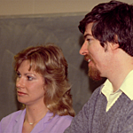
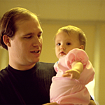
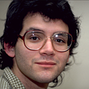
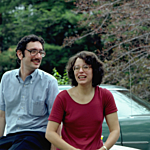

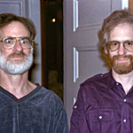
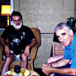
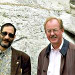
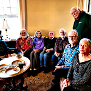


MAC / MIT / BTL Multicians (35)
Here are some pictures of Multicians from Project MAC, MIT, and Bell Labs.


Phoenix Multicians (27)
Here are some pictures of Phoenix Multicians.


Other Multicians (11)
Here are some pictures of Multicians from other organizations.


If anybody in these photos really hates their picture, send mail and I'll remove it.
Other pages that have picture galleries of Multicians are:
- Multics Picnics (58) 1968-1981
- Corby (10) Including his retirement party in 1996
- Tech Square (6) 1963-1983, including 1968 CISL group photo
- Visiting CISL (3) 1974 group photo
- Rome Air Development Center (7) 1970s
- Bull Systeme X (7) 1982-87
- Pictures of CNO Multicians (19) 1981
- Ring Zero and the Null Pointers (2) 1987, 2013
- Julie Jackson's Multics Bio (7) 1977
- The User Ring Newsletter (1) 1986 group photo at Henry Ford Museum
- CISL Farewell (1) 1985 group photo
- The CISL Wake (28) May, 1986
- Project MAC 25th Anniversary (24) Oct, 1988
- Project MAC 35th Anniversary (30) Apr 12-14, 1999
- 2004 Multics Reunion and Dinner (54) June 19, 2004
- 2012 Multics Reunion (12) June 9, 2012
- Project MAC 50th Anniversary (47) May 28-29, 2014
Updated 2026-08-02 11:15